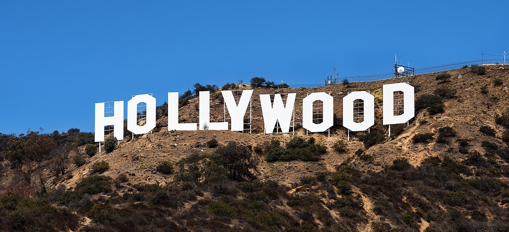

In tutti i più grandi film c'è una colazione che si rispetti, ed oggi andremo ad attenzionare, le 4 colazioni più importanti nella storia del cinema.

In tutti i più grandi film c'è una colazione che si rispetti, ed oggi andremo ad attenzionare, le 4 colazioni più importanti nella storia del cinema.
La nascita del cinema è strettamente legata al momento della colazione: la prima pellicola, in 50 secondi, immortala Auguste Lumière e la moglie intenti nel dare il primo pasto della giornata al loro bambino. La pellicola s’intitola “Repas de bèbè”.